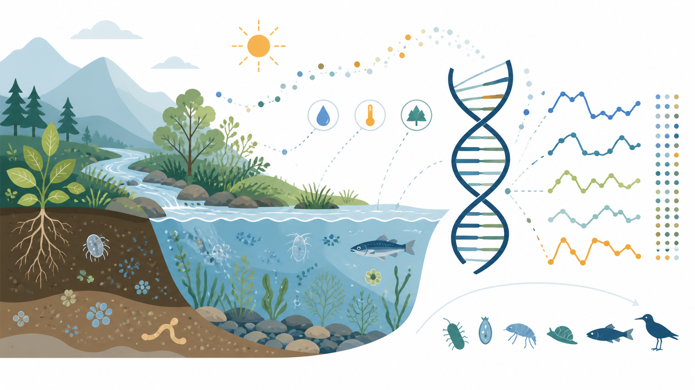

Elucidating Molecular Evolution in Real Natural Environments
Natural environments fluctuate across time, space, species interactions, and gene flow, yet much of molecular evolution is still inferred from simplified laboratory systems or historical genomic patterns. I aim to measure evolutionary dynamics directly in near-natural and natural populations by combining controllable ecological experiments, high-throughput genome editing, lineage barcoding, deep mutational scanning, long-term field sampling, and ultra-deep targeted sequencing. This work will quantify the relative abundance and effects of beneficial, neutral, and deleterious mutations, test how antagonistic pleiotropy operates outside the laboratory, and estimate how selection, drift, migration, balancing selection, and environmental structure jointly shape allele-frequency change. The broader goal is to reveal the real-time molecular dynamics of adaptation and drift in nature.